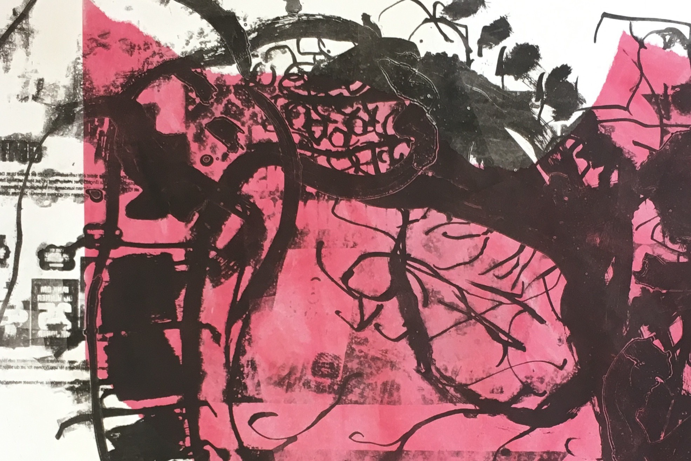

Chihiro Nodera
introduction

”Tiden går framåt. Konst kan gå både framåt och bakåt. Händelser för tusentals år sedan kopplar till nuet i min konst.” -Chihiro Nodera
Utställningar
2019 kommande: Archive Process Yellow, GIBCA Extended, Göteborg Konstrundan i Majorna, KKV, GöteborgUTOPIA, Ålgården, Borås.
Print Fest 7 på The Sevenoaks Kaleidoscope Gallery, UK
Lions vårsalong, Ekdalaskolan, Härryda
2018 People who is gone is living in silence, Lohrs Pocket Medmera Gallery, Göteborg. Artcaching, konst i urbana miljöer i samarbete med RundqvistCO, Göteborg
2017 Grupputställning, Frivilligcentralen Oscar, Göteborg.
2016 Hatsuboku Sansui ” Gallery K, Tokyo
Utbildning
2019 Litografikurs med Stefan Tielscher, KKV Göteborg Textiltryckarkurs med Anna Eggert, KKV Göteborg2018 Litografikurs med Nora Hammenberg, KKV Göteborg
2017 Grafikkurs med Modhir Ahmed, Ålgården Gouachekurs med Ylva Sager, Vadstena
2010-2012 Arkitektur, Kuwasawa Design School, Tokyo
2008-2009 Japansk litteratur, Hosei University, Tokyo
2003-2006 Nihon University Narashino, gymnasieutbildning, Tokyo
Press
Medlem i Urban Sketchers, artikel i GP från 18 november 2017Utställning på Lohrs Pocket i Göteborg"